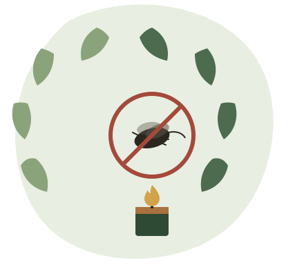

เกี่ยวกับโครงงาน
ที่มา เป้าหมาย และประโยชน์ที่ได้รับ
ที่มาและความสำคัญ
ปัญหายุงกับความเสี่ยงจากเทียนไล่ยุงทั่วไป
ยุงเป็นพาหะนำโรคที่สำคัญ เช่น ไข้เลือดออกและมาลาเรีย ทำให้ผลิตภัณฑ์ไล่ยุงเป็นที่ต้องการอย่างต่อเนื่อง แต่เทียนไล่ยุงและยาจุดกันยุงที่วางขายทั่วไปจำนวนมากผสมสารเคมีสังเคราะห์ ซึ่งเมื่อเผาไหม้อาจปล่อยควันที่ระคายเคืองทางเดินหายใจ และไม่เหมาะกับการใช้งานต่อเนื่องเป็นเวลานานในพื้นที่ปิด
โครงงานนี้จึงมีแนวคิดนำสมุนไพรที่หาได้ง่ายในท้องถิ่น ซึ่งมีกลิ่นฉุนตามธรรมชาติที่ยุงไม่ชอบ มาแปรรูปเป็นเทียนหอมไล่ยุง เพื่อเป็นทางเลือกที่ลดสารสังเคราะห์ ทำได้เองในครัวเรือน และช่วยลดการพึ่งพาผลิตภัณฑ์เคมีสำเร็จรูป

เป้าหมายของโครงงาน
วัตถุประสงค์
พัฒนาสูตรจากสมุนไพร
ศึกษาและพัฒนาสูตรเทียนหอมไล่ยุงจากสมุนไพรธรรมชาติที่หาได้ในท้องถิ่น แล้วทดสอบฤทธิ์ไล่ยุงด้วยการทดลองของกลุ่ม
ลดการใช้สารเคมี
นำเสนอทางเลือกที่ลดสารสังเคราะห์เมื่อเทียบกับเทียนไล่ยุงเคมีสำเร็จรูปสำหรับใช้ในครัวเรือน
เผยแพร่ความรู้ที่ทำได้จริง
ถ่ายทอดขั้นตอนการทำอย่างละเอียด ให้ผู้สนใจสามารถนำไปทำใช้เองหรือต่อยอดเป็นอาชีพได้
เปรียบเทียบให้เห็นภาพ
เทียนไล่ยุงเคมี เทียบกับเทียนหอมไล่ยุงสมุนไพร
| ประเด็น | เทียนไล่ยุงเคมีทั่วไป | เทียนหอมไล่ยุงสมุนไพร |
|---|---|---|
| ส่วนผสมหลัก | สารเคมีสังเคราะห์ไล่แมลง | สมุนไพรธรรมชาติ เช่น ตะไคร้หอม การบูร |
| กลิ่นและควัน | กลิ่นฉุนแรง อาจระคายเคืองทางเดินหายใจ | กลิ่นหอมสมุนไพร แต่ยังมีควันจากการเผาไหม้ จึงควรจุดในที่อากาศถ่ายเท |
| การทำเอง | ผลิตในโรงงาน ไม่สามารถทำเองได้ | ทำเองได้ที่บ้านด้วยอุปกรณ์พื้นฐาน |
| ต้นทุน | ราคาตามท้องตลาด | คำนวณต้นทุนจริงจากสูตรของทีมได้ และต่อยอดเป็นรายได้เสริมได้ |
หมายเหตุ: ตารางนี้สรุปจากแนวคิดของโครงงานเพื่อการเปรียบเทียบเบื้องต้นเท่านั้น ประสิทธิภาพจริงขึ้นอยู่กับชนิดและปริมาณสมุนไพรที่ใช้
อยากรู้ว่าเทียนหอมสมุนไพรสูตรนี้ทำจากอะไรบ้าง ไปดูต่อได้ที่หน้า ส่วนผสม
ข้อดี
ประโยชน์ของเทียนหอมไล่ยุงสมุนไพร
ช่วยลดยุงใกล้จุดที่ตั้ง
ตะไคร้หอมและกานพลูมีรายงานฤทธิ์ไล่ยุงในงานวิจัย เทียนให้ผลได้จำกัดเฉพาะบริเวณใกล้จุด ควรใช้ร่วมกับมุ้งและการกำจัดแหล่งน้ำขัง
ลดสารสังเคราะห์ในสูตร
ใช้ไขถั่วเหลืองและสมุนไพรเป็นหลัก ลดสารสังเคราะห์ในสูตร แต่การเผาไหม้ทุกชนิดมีควัน จึงควรจุดในที่อากาศถ่ายเท
กลิ่นหอมผ่อนคลาย
กลิ่นสมุนไพรธรรมชาติช่วยสร้างบรรยากาศผ่อนคลายไปพร้อมกับการไล่ยุง
เป็นมิตรต่อสิ่งแวดล้อม
วัตถุดิบหลักมาจากพืช และใช้เปลือกส้มที่เหลือทิ้งให้เป็นประโยชน์ได้
ประหยัดค่าใช้จ่าย
ซื้อวัตถุดิบหลายชนิดจากตลาดทั่วไปได้ เหมาะกับการทำใช้เองในครัวเรือน ให้ทีมคำนวณต้นทุนจริงต่อโหลเปรียบเทียบกับของสำเร็จรูป
ต่อยอดเป็นอาชีพได้
สามารถพัฒนาสูตรและบรรจุภัณฑ์เพื่อจำหน่ายเป็นรายได้เสริมได้ในอนาคต